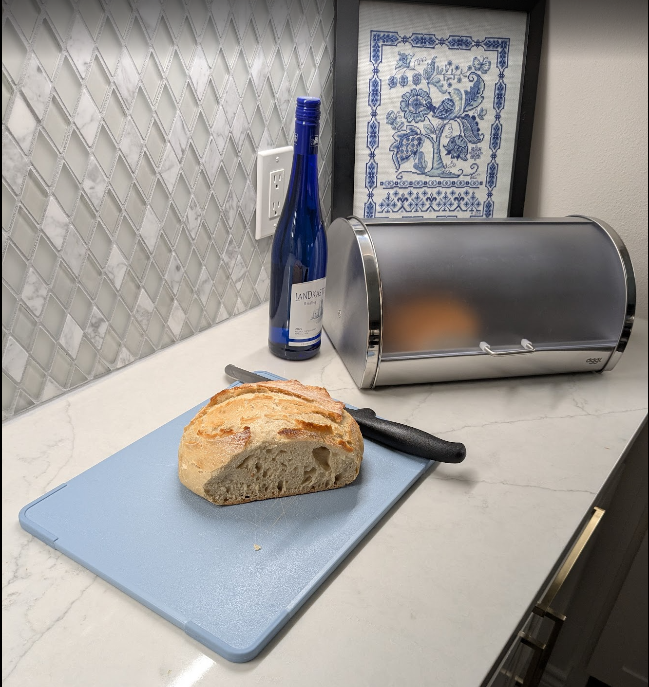

No-Knead Artisan Bread

Ingredients
- 3 C all-purpose flour
- ¼ tsp instant yeast
- 1¼ tsp salt
- 1½ C cold water
Directions
- Mix Dough: Mix until the dough just comes together; it will be shaggy and sticky.
- Long Proof: Cover and let proof 12-24 hours at room temperature.
- Preheat Oven: Preheat oven to 450°F with a Dutch oven inside.
- Shape: Gently deflate dough, fold over like a napkin, turn seam-side down, and shape into a ball.
- Rest: Transfer dough to a parchment-lined bowl and let rest while the oven finishes heating.
- Bake: Carefully transfer dough (with parchment) to the hot Dutch oven. Bake 30 minutes covered, then 5-15 minutes uncovered, depending on desired crust crunch.
Chef's Notes
- If using cold water, let the dough sit 12-24 hours. For quicker fermentation, use the hottest tap water available (~110°F) and proof 3-5 hours.
- Do not use boiling water - it will kill the yeast.
The Gumbo Page
Michael Fritsche
mbf@fritsche.org